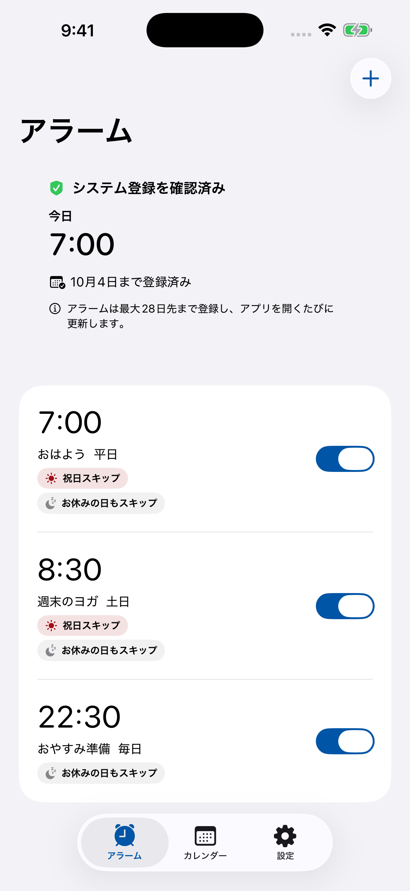

画面は1.1.0のプレビューですA LITTLE LESS TO REMEMBER
平日の設定は、そのまま。
日本の祝日をスキップ
内閣府のデータで祝日・振替休日を判定。対象の繰り返しアラームは、その日だけお休みします。
自分の休みも追加
有休や創立記念日は、自分で登録。年末年始のプリセットも必要な方だけオンにできます。
好きな音を選ぶ
15種類の内蔵サウンドと、だんだん大きくなる音。日々の使い方に合わせてスヌーズも選べます。
次の休みを、設定しておこう。
- 起きる時刻と、繰り返す曜日を選びます。
- 「祝日はスキップ」をオンに。自分の休暇は設定から追加します。
- サウンドを選んで保存。ホーム画面で次の予定と登録状態を確認します。
アラームは最大28日先まで登録します。長期間アプリを開かないと、予約が補充されない場合があります。登録済み期間を確認し、期間が終わる前にアプリを開いてください。
2026年9月の祝日
9月21日は敬老の日、22日は休日、23日は秋分の日です。この期間がお休みの方は、対象の曜日とスキップ設定を確認しましょう。出勤する方は、必要なアラームの祝日スキップをオフにできます。
祝日の日付を内閣府で確認するGOOD TO KNOW
よくある質問
有休の日もスキップできますか？
はい。自分のお休みの日を追加し、対象の繰り返しアラームで「お休みの日もスキップ」をオンにします。有休の日程を自動で取得する機能ではありません。
一回だけのアラームも祝日は鳴りませんか？
一回だけのアラームにはスキップ設定を適用しません。祝日も含め、次に来る指定時刻に鳴る設定です。祝日をスキップするには、繰り返す曜日を選んでください。
アプリを開かなくてもずっと使えますか？
最大28日先まで事前登録し、アプリを開くと更新します。バックグラウンド更新はiOSの判断に依存するため、長期間開かないと予約が補充されない場合があります。登録済み期間をアプリで確認してください。
月額料金や広告はありますか？
買い切りです。サブスクリプション、アプリ内課金、広告はありません。アカウント登録も不要です。
祝日データの出典はどこですか？
日本の内閣府が公開する祝日CSVを使用します。設定は端末内に保存し、個人データは収集しません。詳しくはプライバシーポリシーをご覧ください。
いつもの朝も、休む朝も。
自分の予定に合った目覚ましを。
App Storeで祝日アラームを見る